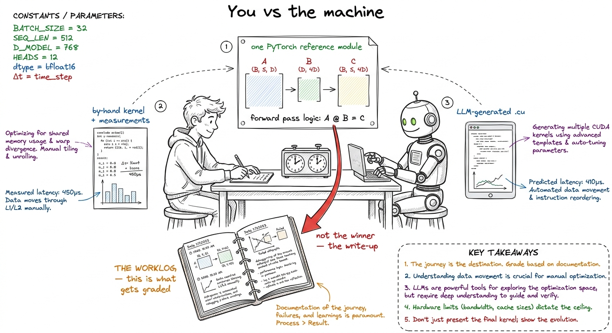
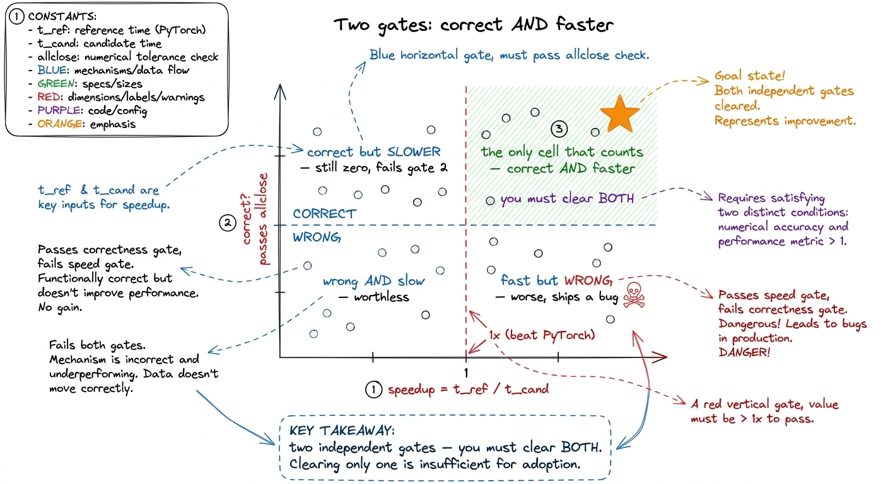
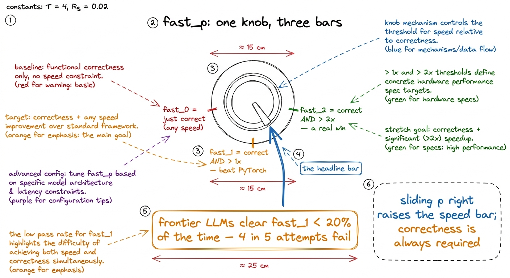
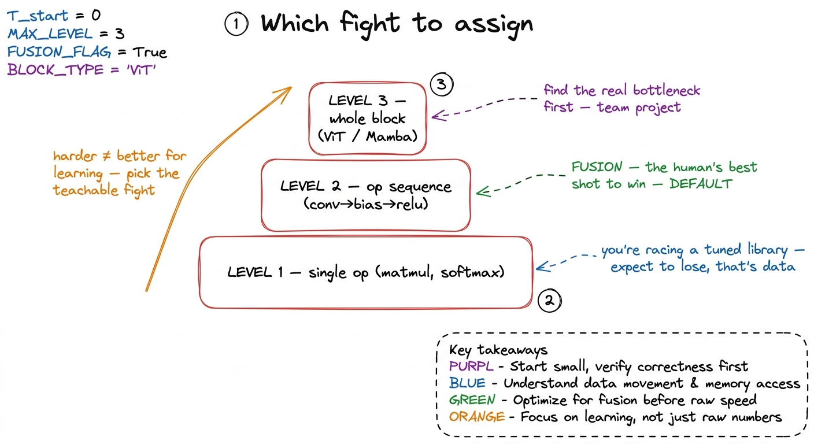
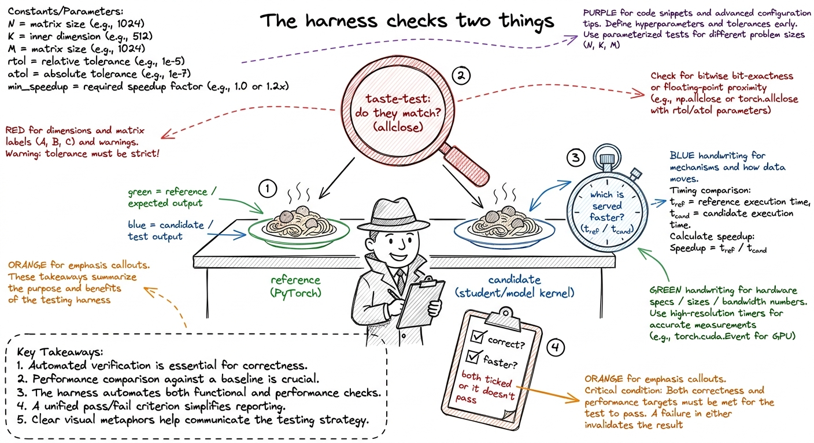
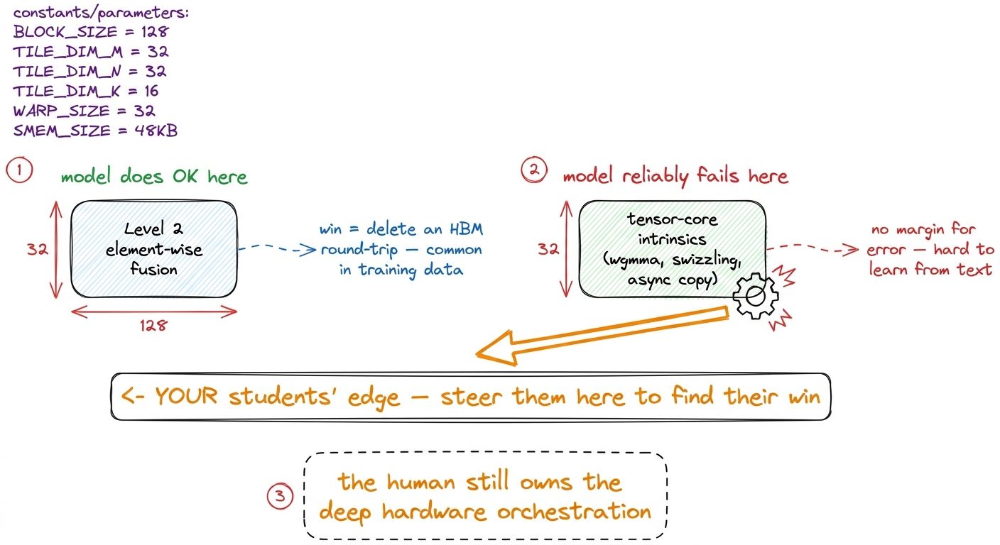

Running the 'You vs the machine' capstone
By the end of this chapter you'll be able to set up, mentor, and grade the "You vs the machine" capstone — the final project where each student writes a kernel by hand, points a language model at the same problem, and keeps a worklog of the fight. And you'll be able to do the one thing that makes this capstone work: grade the thinking, not the raw speedup.
This is where the four weeks come together. The capstone is a supervised sprint, and your job shifts from "explainer at the whiteboard" to "coach on the sideline." Let's build the coaching muscle.
The one-sentence version of the capstone
Every student picks one kernel problem and does two things with it. First, they write the kernel themselves, by hand, measuring as they go — the predict-then-measure loop we've drilled all month. Second, they hand the exact same PyTorch reference to a language model and ask it to write the kernel too. Then they compare, in a worklog: where the human won, where the model won, why, and what each got stuck on.
The deliverable is not the fastest kernel. The deliverable is the worklog.

figure rendering · The capstone framed as a match plus a diary: human and model attack thWhy a worklog and not a leaderboard
Here is the trap you must steer students away from. If you grade on raw speedup, you teach students to chase a lucky number instead of understanding. Kernel speed is noisy, hardware-specific, and often decided by one lucky guess about a tile size. A leaderboard rewards the coin-flip. A worklog rewards the reasoning.
A real benchmark already made this exact design decision, and you should tell your students about it — it makes the capstone feel like the real world, because it is. It's called KernelBench.
nn.Module, ask it to emit a functionally identical kernel in inline CUDA, faster. It's not academic trivia — it's the yardstick people actually use to ask "can an LLM write GPU kernels yet?" Your capstone is a hand-run, human-scale version of the same experiment. When a student runs their own "You vs the machine" match, they are reproducing, on one problem, what a whole research field runs on hundreds.The most important thing KernelBench got right is its scoring metric, and it's the backbone of how you'll grade. It refuses to reward the wrong thing. Let me build it up the way you'll build it for students.
The two gates: correct AND faster
A kernel can fail in two completely different ways, and students always forget one of them. Say this line out loud at the board and let it sit.
Gate one is correctness. You run both the reference and the candidate on random inputs and check the outputs match — not bit-for-bit, but within a tolerance (an allclose with a sensible atol/rtol). Why a tolerance? Because a legitimate fast kernel might add up numbers in a different order, or use slightly lower precision, and floating-point arithmetic isn't perfectly associative. The tolerance forgives honest floating-point reordering while still catching a real bug.
Gate two is speed. You time both forward passes and take the ratio: speedup = t_reference / t_candidate. Above 1× means the candidate is genuinely faster than PyTorch.

figure rendering · The scoring picture students must internalize: correctness and speed afast_p: one dial that sets the bar
KernelBench folds both gates into one clean idea called fast_p. Here p is a number you pick — the speedup you're demanding. fast_p is "the fraction of problems where the kernel is correct and at least p× faster than PyTorch." Slide the dial and the meaning changes:
- fast_0 is basically just "is it correct?" — any speed counts.
- fast_1 is the headline: correct and strictly faster than PyTorch (speedup
> 1×). This is "did you actually beat the framework?" - fast_2 is a real engineering win: correct and more than twice as fast (
> 2×).

figure rendering · fast_p as a single dial: p sets how much speedup you demand, and evenSetting up the capstone (the logistics)
Now the practical part — how you run this in the room. Keep the moving parts small.
Pick the problem tier deliberately. KernelBench sorts problems into three levels, and the level decides how the match goes — so choose it to make a teachable fight, not an impossible one.
- Level 1 — a single operator (one matmul, one softmax, one layernorm). Brutal, because PyTorch's reference already dispatches to a tuned library like cuBLAS. Even a strong hand-written matmul only reaches about 93.7% of cuBLAS, so "just beat PyTorch" is a high bar here. Assign Level 1 only to your strongest students, and set the expectation that losing to the library is a normal, publishable result.
- Level 2 — an operator sequence (
conv → bias → scale → ReLU). This is the sweet spot for most students. The win is fusion: collapse the chain into one kernel so the intermediate results never leave the chip. It's a memory-movement win, it's learnable, and it's where students most often beat both PyTorch and the model. - Level 3 — a full architecture block (a ViT block, a Mamba block). Dozens of ops, multiple bottlenecks. The skill is finding where the time actually goes before optimizing. Great for a team, hard for a solo student.

figure rendering · Choosing the capstone tier: Level 2 fusion is the default because it'sThe measurement harness. Give students a ready-made harness so nobody loses a week to timing bugs. It does three things and nothing more: (1) runs both modules on several random inputs and checks allclose, (2) times both forward passes and reports the speedup, (3) warms up the GPU before timing so the first-run overhead doesn't pollute the number.

figure rendering · The harness as a kitchen inspector: it tastes both dishes for a match,allclose catch it and print FAIL. Now they trust both gates before they've written a line themselves.What the worklog must contain
This is the graded artifact, so be explicit about its skeleton. A good worklog has five sections — hand them this list on a slip of paper.
- The problem and the plan. Which PyTorch reference, which tier, and the student's predicted bottleneck before writing anything — memory-bound or compute-bound? (The predict-then-measure loop starts here.)
- The by-hand attempt. Each kernel version, its measured time, and why they changed it. Not "v2 was faster" — "v2 tiled into shared memory because v1 was re-reading the same row from HBM 32 times."
- The model's attempt. The exact prompt, what the model emitted, and whether it passed both gates on the first try. Did it even compile? Did the numbers match?
- The head-to-head. The final speedups side by side, and — this is the heart of it — an honest explanation of the gap in either direction.
- What each got stuck on. The single most valuable page. Where did the human waste an afternoon? Where did the model confidently produce garbage?
Where the machine reliably breaks (coach with this)
You'll mentor better if you know where the language model tends to fail — that's where you steer students to look for their win. The failure profile from KernelBench is remarkably consistent.
The model does relatively well on Level 2 fusion, where the win is simply "delete a round-trip to HBM" — a pattern all over its training data. It does badly wherever the win requires hardware-specific intrinsics and tensor-core utilization — orchestrating things like wgmma, shared-memory swizzling, and async copies with no margin for error. That deep orchestration is hard to learn from text, and it's precisely the skill your students spent four weeks building by hand.

figure rendering · The model's failure map, used as a coaching tool: point students at teThe grading rubric (make it concrete)
Give yourself and the students a rubric that matches everything above. A workable split:
- Correctness & measurement discipline (30%) — did both attempts actually pass gate one, and is the timing done honestly (warmup, multiple runs, reported ratio)?
- Depth of the by-hand worklog (30%) — does each kernel version have a reason, tied to a measurement, not a guess?
- Quality of the head-to-head analysis (30%) — is the gap, in either direction, explained with real mechanism (memory movement, tensor cores, fusion), not vibes?
- Honesty (10%) — losing to the model, cleanly explained, scores full marks here; a hidden or fudged result loses all of it.
1 Notice the raw speedup number appears in zero of these buckets on its own. It only matters as evidence inside "measurement discipline" and "analysis." A student can score 100% while losing every single race, as long as the worklog is honest and mechanistic. That is the whole philosophy of the capstone in one rubric.
You can now teach
- The capstone framing: a "You vs the machine" match on one shared PyTorch reference, where the graded deliverable is the worklog, not the winner.
- The two-gate scoring idea — correct and faster — and fast_p as one dial (fast_0 / fast_1 / fast_2), with the honest allclose-plus-timing harness behind it.
- The jaw-drop number: frontier LLMs clear fast_1 less than 20% of the time — the emotional hook that tells students the machine is beatable.
- Choosing the tier (Level 1 / 2 / 3) to set up a teachable fight, and why Level 2 fusion is the default where the human most often wins.
- The worklog skeleton and rubric — five sections, four grading buckets, raw speedup deliberately not on the scoreboard.
- Where the model reliably breaks (tensor-core intrinsics, deep memory orchestration) and how to steer students toward the win their four weeks earned them.